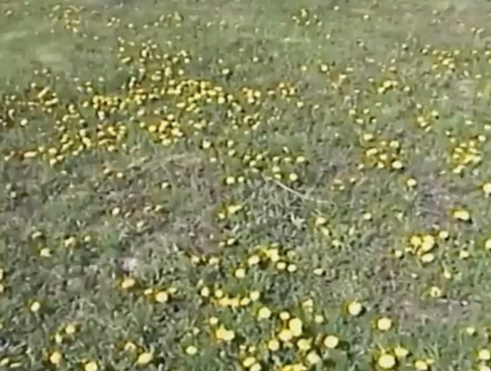
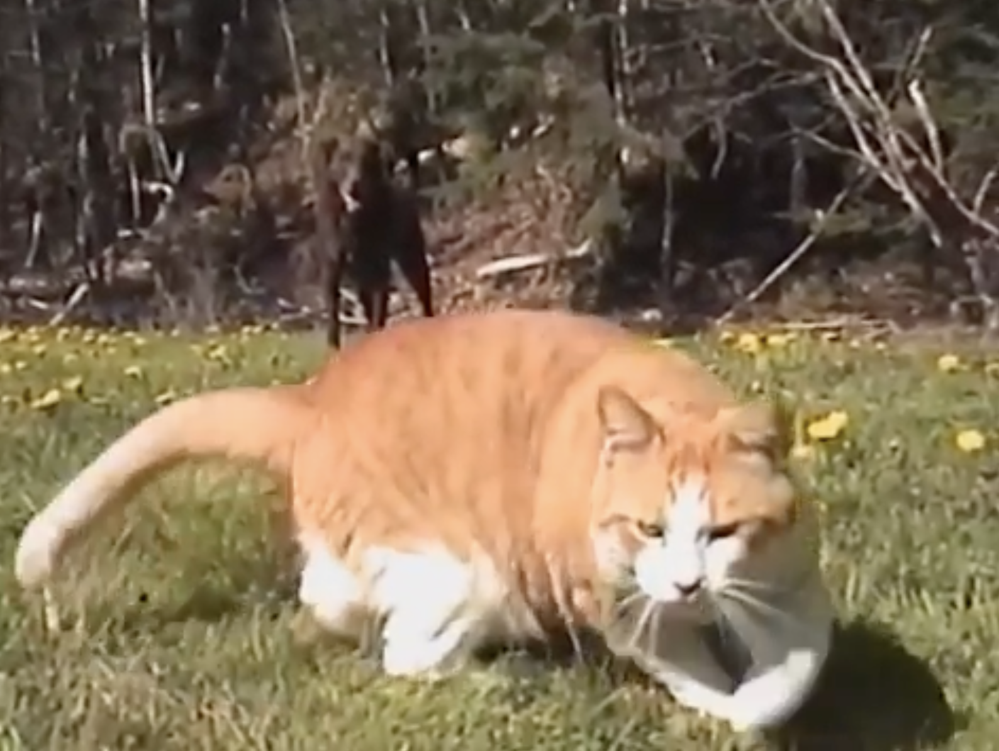
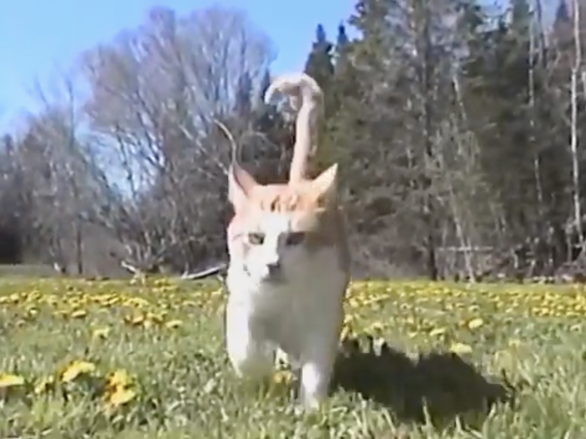
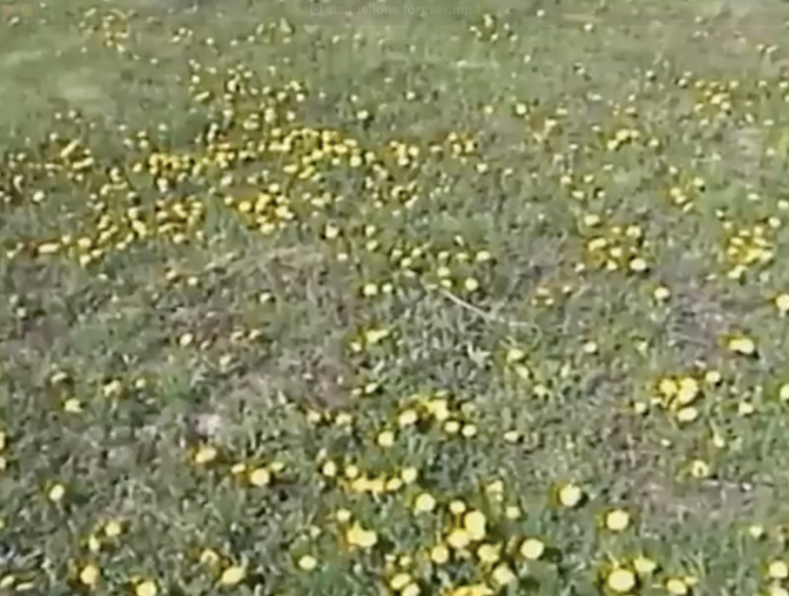
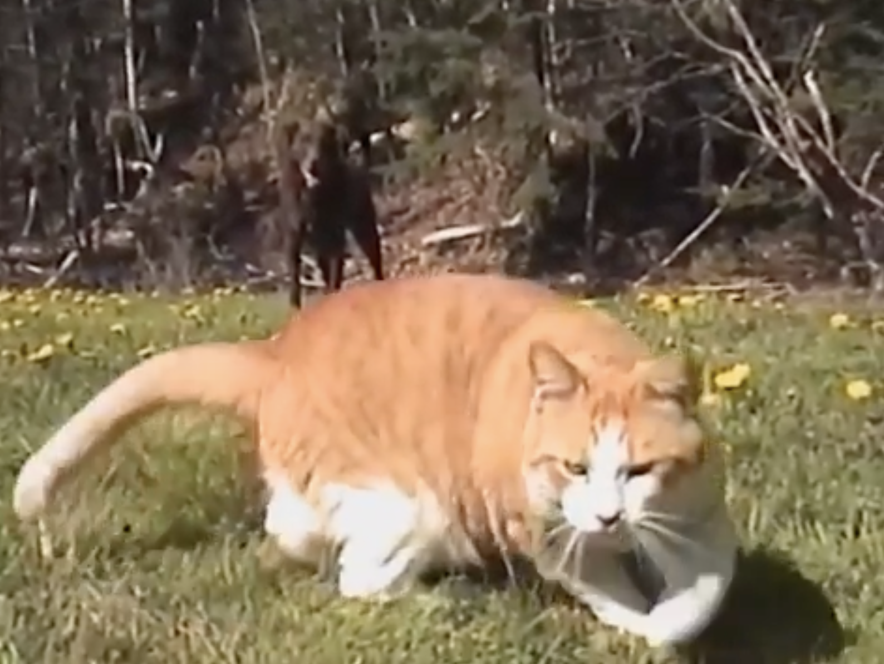
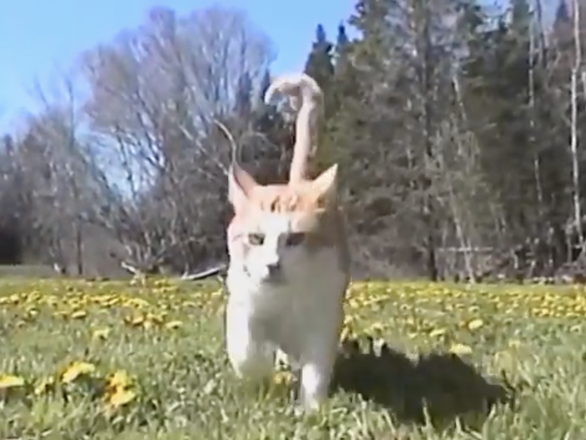

animation
animation
 copy.png) photo
photo

Camcorder footage with its old, textured look makes the present feel like the past.
Once recorded, even current moments become memories.
The footage isn’t truly old, yet it can still evoke nostalgia, warmth, and a hint of sadness.
This might be why camcorders are often used in lyrical or dreamy music.
Their appeal lies not in telling some grand story, but in capturing personal memories,
giving a sense of intimacy and emotional depth.
 


, GAKHED
is a Canadian musician and video creator who works with lofi/ alternative music.
His goal is to make people feel a sense of nostalgia through the memories and music he made.
, 2025.



, GAKHED
is a Canadian musician and video creator who works with lofi/ alternative music.
His goal is to make people feel a sense of nostalgia through the memories and music he made.
, 2025.
 , Yaeji & OHHYUK
, Yaeji is an American DJ, singer, and producer
who creates house music with hip-hop influenced mellow bass.
, Yaeji & OHHYUK
, Yaeji is an American DJ, singer, and producer
who creates house music with hip-hop influenced mellow bass.